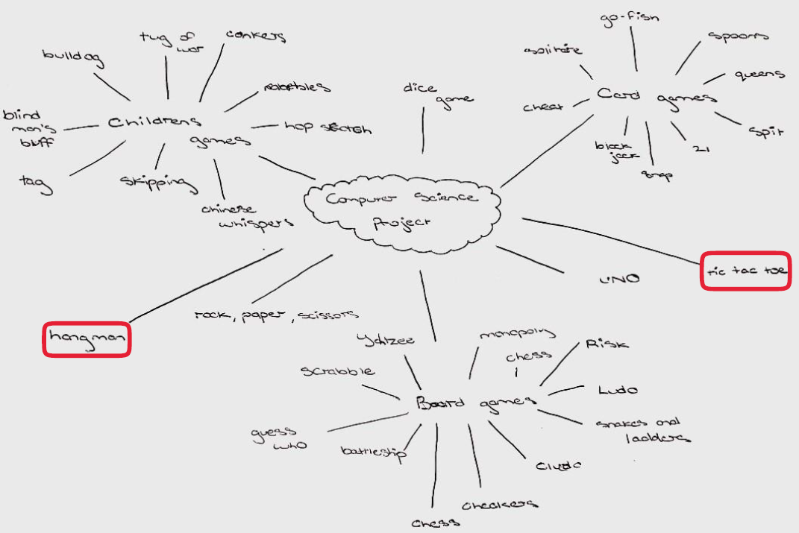

To explore different ideas I would base my project on, I created a brainstorm. After brainstorming, I chose two games that I would investigate further (see brainstorm). For hangman, I would use the Pydictionary library to generate a random word and the user would input letters from the keyboard to play. Eventually, I decided to choose tictactoe because I thought it would be easier to program under the assigned timeframe and I could make a better UI for it. I also thought tictactoe would be more suitable for brief requirements as it is already a two player game.
According to a Cornell University blog, the minimax algorithm is a recursive algorithm used to choose the next move in a game involving 2 or more players. A value is associated with each move and the move that would result in the highest value is chosen. This idea was used to program the famous Deep Blue AI, a chess computer developed by IBM in the 1990’s. My initial plan was to use this algorithm to simulate tictactoe. However, using this algorithm would not include the random aspect mentioned in the brief and I didn’t think it was suitable time frame of the project too. To perfect players would also result in 100% draws, allowing for minimal data analysis.
In 1959, T. M. Little of the University of California used combinatorial analysis to find various probabilities for the game tictactoe. Assuming player 1 always goes first, his results were as follows:

After reading multiple research papers explaining the maths behind tictactoe, I became curious as to other probabilities, such as those involving starting positions.
I created a simulation of the game tictactoe with python that follows the standard rules of the game. To move, users enter a number from the keypad that correlates with the intended grid position. In the single player game mode, players play against a computer that chooses moves randomly. In multiplayer, players take turns making moves on a 3x3 grid. In the simulation play, the user decides the number of times to run the simulation, the starting player and the starting position of the games. The results will be stored in a csv and then graphed. Using a csv file with previously collected data, graphs will be displayed and used to test various hypotheses. The end-users for my project would be game developers who could use game probabilities of tictactoe to create similar versions of the game or use probabilities to change game difficulty.
Functioning of the Game
User Interface
Hypotheses
Find the probability of winning if:
Note: all corner squares etc. have equal opportunities of winning when taking symmetry into account.